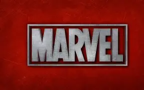

1. Homem-Aranha foi criado em 1962:
Stan Lee e Steve Ditko criaram o personagem, que apareceu pela primeira vez em Amazing Fantasy #15.
Stan Lee e Steve Ditko criaram o personagem, que apareceu pela primeira vez em Amazing Fantasy #15.
Tony Stark apareceu pela primeira vez em 1963 e foi criado por Stan Lee, Larry Lieber, Don Heck e Jack Kirby.
O escudo do Capitão América é feito de um material fictício chamado vibranium, que é extremamente resistente e absorve impactos.

4. Wakanda e o vibranium:Wakanda é o principal país fictício onde existe o vibranium, um dos materiais mais importantes do universo Marvel..